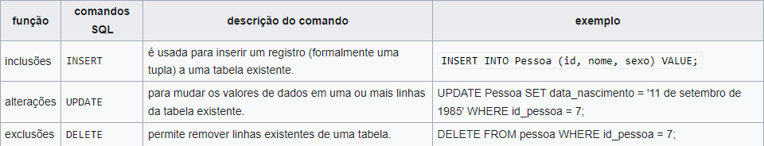

O SQL foi desenvolvido originalmente no início dos anos 70 nos laboratórios da IBM em San Jose.A linguagem é um grande padrão de banco de dados. Isto decorre da sua simplicidade e facilidade de uso. Ela se diferencia de outras linguagens de consulta a banco de dados no sentido em que uma consulta SQL especifica a forma do resultado e não o caminho para chegar a ele. Ela é uma linguagem declarativa em oposição a outras linguagens procedurais. Isto reduz o ciclo de aprendizado daqueles que se iniciam na linguagem.
Embora o SQL tenha sido originalmente criado pela IBM, rapidamente surgiram vários "dialetos" desenvolvidos por outros produtores. Essa expansão levou à necessidade de ser criado e adaptado um padrão para a linguagem. Esta tarefa foi realizada pela American National Standards Institute (ANSI) em 1986 e ISO em 1987.O SQL foi revisto em 1992 e a esta versão foi dado o nome de SQL-92. Foi revisto novamente em 1999 e 2003 para se tornar SQL:1999 (SQL3) e SQL:2003, respectivamente. O SQL:1999 usa expressões regulares de emparelhamento, queries recursivas e gatilhos (triggers). Também foi feita uma adição controversa de tipos não-escalados e algumas características de orientação a objeto. O SQL:2003 introduz características relacionadas ao XML, sequências padronizadas e colunas com valores de auto-generalização (inclusive colunas-identidade).
Tal como dito anteriormente, embora padronizado pela ANSI e ISO, possui muitas variações e extensões produzidos pelos diferentes fabricantes de sistemas gerenciadores de bases de dados. Tipicamente a linguagem pode ser migrada de plataforma para plataforma sem mudanças estruturais principais.Outra aproximação é permitir para código de idioma procedural ser embutido e interagir com o banco de dados. Por exemplo, o Oracle e outros incluem Java na base de dados, enquanto o PostgreSQL permite que funções sejam escritas em Perl, Tcl, ou C, entre outras linguagens.

Linguagem de Definição de Dados
O segundo grupo é a DDL (Data Definition Language - Linguagem de Definição de Dados). Uma DDL permite ao utilizador definir tabelas novas e elementos associados. A maioria dos bancos de dados de SQL comerciais tem extensões proprietárias no DDL. Os comandos básicos da DDL são poucos:
CREATE: cria um objeto dentro da base de dados.
DROP: apaga um objeto do banco de dados.
Alguns sistemas de banco de dados usam o comando ALTER, que permite ao usuário alterar um objeto, por exemplo, adicionando uma coluna a uma tabela existente.Outros comandos DDL: